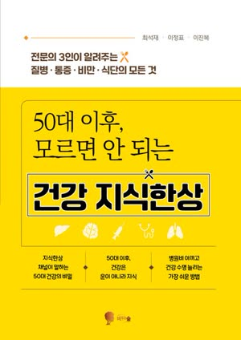
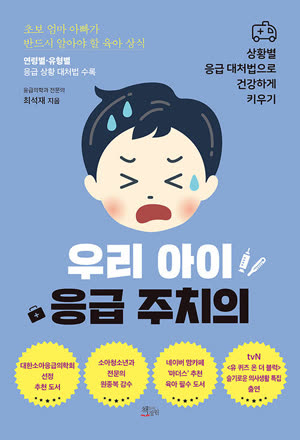
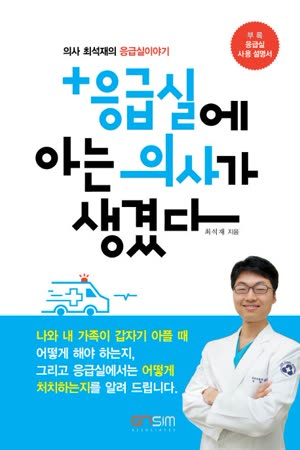

I'm Choi Sukjae, MD. After 20 years in the emergency room, I explain the warning signs you should never ignore, and the daily habits that keep you out of the ER.
"Beyond treatment,
I prescribe a way of living."
For 20 years I have worked in the emergency room, where heart attacks, strokes and sudden cardiac arrest arrive without warning. What I learned there now shapes how I talk about prevention.
I turn ER experience into plain, practical advice: when to act fast, and what to change every day to lower the risk of high blood pressure, diabetes, fatty liver and cancer.
Real ER cases, and what to do in the first minutes before help arrives.
How blood pressure, blood sugar, weight, fatty liver and stress add up, and the eating, exercise and mind habits that help.
The emergencies families face most often, and calm first steps.
Any of these topics for Korean community groups outside Korea.
Talks are given in Korean. For English-speaking audiences, please ask about interpretation.

Health Knowledge for Life After 50Korean
Your Child's Emergency DoctorKorean
Now I Know a Doctor in the ERKoreanEnglish titles are translations. All books are published in Korean.
A free app for daily diet, exercise and mind habits, now in English. Open it in Chrome or Safari, since Google sign-in may not work inside in-app browsers. On iPhone, add it to your Home Screen from Safari.
Talks, interviews, media appearances and collaborations. Please include your organization, audience, date and location.
Send an inquiry csj3814@naver.com